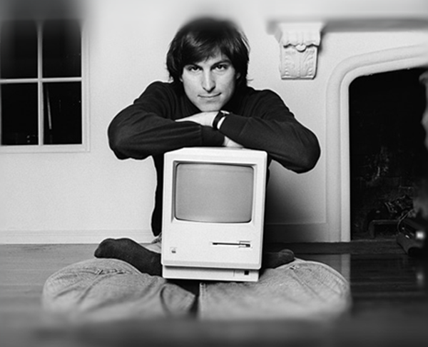
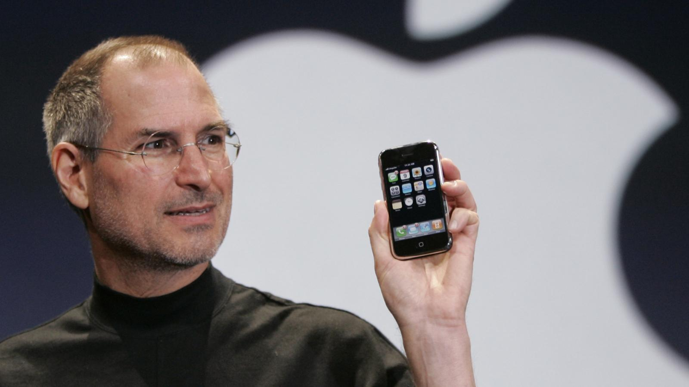

Steven Paul Jobs
The Technological Revolutionary and Visionary Co-founder of Apple
"Have the courage to follow your heart and intuition. They somehow know what you truly want to become."
— Steve Jobs

Timeline of Steve Job's Life
- February 24, 1955 - Born to Abdulfattah Jandali and Joanne Schieble. Unable to take care of him, Steve's parents put him up for adoption. He was later adopted by Paul and Clara Jobs.
- 1961 - Moves to Mountain View, California, which would later become known as Silicon Valley.
- 1968 - Interns with Hewlett-Packard after contacting Bill Hewlett for spare parts to build a electronic frequency counter.
- 1970 - Meets future Apple co-founder Steve Wozniak.
- 1972 - Graduates from Homestead High School, and enrolls at Reed College, only to drop out one semester later. Audits courses that interested him, like caligraphy.
- 1974 - Hired by Atari Inc. in Los Gatos, California, working as a technician. Later, he traveles to India to attain spiritual enlightenment.
- 1975 - Returns back to California and begins practicing Zen Buddhism while living in his parents' backyard toolshed. He later returns to Atari.
- 1976 - Wozniak finishes design of the Apple I personal computer. Soon after, Jobs, Wozniak, and Ronald Wayne co-found Apple Computer Company.
- 1977 - Jobs and Wozniak introduce the Apple II personal computer at the West Coast Computer Faire, which eventually becomes one of the most successful microcomputer products in the world. Apple also incorporates on January 3.
- 1980 - Apple Computer goes public.
- 1983 - Apple releases The Lisa desktop computer on January 19, 1983. The Lisa was named after Steve's biological daughter, Lisa Brennan.
- 1984 - Apple releases the Macintosh personal computer on January 24, 1984.
- 1985 - Leaves the company after being in conflict with John Sculley. Founds NeXT Computer with five senior Apple employees who had also resigned with him. Tim Berners-Lee uses a NeXT workstation as the first server of the World Wide Web.
- 1986 - Funds The Graphics Group division of Lucasfilm Studios, which eventually becomes Pixar Animation Studios.
- 1988 NeXT's first personal computer is shown and released in the world. Many consider this period to be Jobs' comeback event.
- 1993 - NeXT changes its focus from selling hardware to selling software, with the company later being renamed to NeXT Software, Inc.
- 1995 - Becomes the CEO and president of Pixar, and brings the company public after the release of "Toy Story".
- - Returns to Apple Computer as an adviser for the Macintosh team after Apple buys NeXT for $429 million.
- 1997 - Is named as Apple Computer's interim CEO, and introduces the Apple Store.
- 1998 - Apple Computer returns to profitability, introduces the iMac.
- 2001 - Introduces iTunes and the iPod, ships first version of Mac OS X, which was codenamed "Cheetah".
- 2002 - Introduces the first Windows-compatible iPods.
- 2003 - The iTunes Music Store is opened, which sold five million songs in only two months. iTunes also becomes compatible with Windows, with Jobs saying that "hell froze over".
- 2004 - Undergoes a successful surgery to remove a cancerous tumor after he had been diagnosed with pancreatic cancer.
- 2005 - The iPod shuffle, iPod Nano, and iPod with video are introduced.
- 2006 - Disney buys Pixar for $7.4 billion, iTunes sells its billionth song on February 2, 2006.
- 2007 - In a historic event, Jobs introduces the iPhone at MacWorld 2007. He claimed that the revolutionary product was "five years ahead of any other mobile phone". The iPod Touch was also introduced.
- 2008 - Introduces the App Store, the MacBook Air, and MobileMe.
- 2009 Takes a 6-month leave of absence from work due to undisclosed medical reasons.
- 2010 Introduces the iPad, which has 500,000 units sold its first week on the market. In June 2011, Apple discloses that it had sold 200 million iOS devices.
- 2011 Resigns from the company in January, and names Tim Cook as Apple's next CEO. Passes away on October 5, 2011.
"Don’t let the noise of others’ opinions drown out your own inner voice."
-Steve Jobs

"The people who are crazy enough to think they can change the world are the ones who do."
-Steve Jobs
"Stay hungry. Stay foolish."
-Steve Jobs
If you'd like to learn more about Steve, then you can read more about him on his Wikipedia page